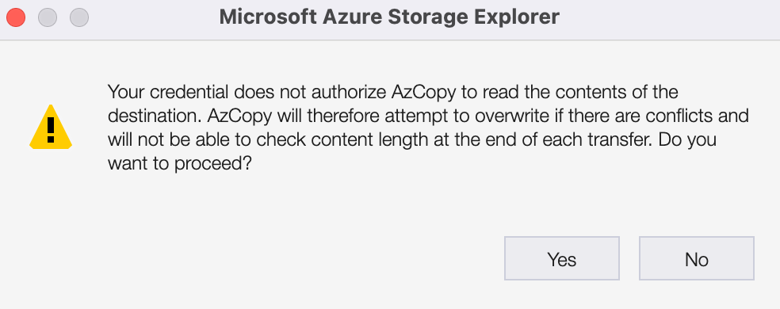

Data Ingress to the Turing Data Safe Haven¶
Intro¶
Your data is precious to us. The utmost care is taken when transferring the data. However, you will need to follow the guidance to certify we are able to ensure your security.
We have built a Safe Haven solution which uses cloud computing. This uses technology that keeps the data safe, but equally importantly, the processes and contractual agreements that enforce this safety, which your organisation are signing up to.
Loading data into the environment¶
There are three methods of transferring data to the safe haven (in order of preference):
Microsoft Azure Storage Explorer
SFTP
Physical
Under no circumstance should sensitive data be sent via email, including encrypted.
Azure¶
The Safe Haven is built upon the Microsoft Azure platform. The most convenient way of transferring data from your organisation safely is to use the Azure Storage Explorer. You do not require log in credentials to upload data via the Azure Storage Explorer. Instead we will provide a temporary secure access link to allow you to upload data.
Before we can begin…¶
You will need to confirm that you are able to receive a secure email. We use the Egress secure email service, which is free to setup for receiving secure emails.
You will need to send us the public IP address (or range of IP addresses) that are used by the people in your organisation with permission to upload the data. The data ingress volumes are by default not accessible outside of the Turing, and we will provide temporary access to the upload volume from your IP addresses during the upload period. Actually uploading data will from these IP addresses will also require the person uploading the data to have access to the temporary secure access link we provide.
Checklist:
Access secure emails on work computer
Send Turing the public IP address (s) of the computer that will conduct the transfer
When we receive the IP address, we will send the person responsible for the data transfer a temporary secure access link via secure email. This “write-only” access link has write, list and delete privileges, which will allow you to upload files, verify they have been successfully uploaded and remove or overwrite uploaded files if you need to amend the uploaded data. It will not allow you to download the contents of the uploaded files. This provides an added layer of protection in case the upload link is inadvertently leaked.
Note: Whilst the connection between your computers and our repository is one way – you can only send data, not retrieve it – if a malicious actor got hold of the link, they could poison your data
Uploading¶
Open Azure Storage explorer
Click the socket image on the left hand side

On
Select Resource, chooseBlob containerOn
Select Connection Method, chooseShared access signature URL (SAS)and hitNextOn
Enter Connection Info:
Set the
Display nameto “ingress” (or choose an appropriate name)Copy the SAS URL that the administrator sent you via secure email into the
Blob container SAS URLbox and hitNext
On the
Summarypage:
Ensure the permissions include
Write&List(if not, you will be unable to upload data and should contact the administrator who sent you the token)Hit
Connect
On the left hand side, the connection should show up under
Local & Attached->Storage Accounts->(Attached Containers)->Blob Containers->ingress (SAS)You should now be able to upload data to the Safe Haven by clicking the
Uploadbutton, completing the ingress process
Note: Since you were not given read permissions, it’s expected that you will receive the following warning when uploading a file. Click Yes.

Common issues¶
You may receive an error: “this request is not authorized to perform this operation”
This means that the IP address you have given us is not correct and is therefore being blocked.
You can open a browser and type “what is my IP” to confirm if the IP address you sent corresponds to what your externally facing IP address actually is, or contact your IT team.
SFTP¶
If you are unable to install the Microsoft Azure Storage Explorer on your system, we can offer you an SFTP server. This will not be as easy.
We will send you a separate secure email with the address of the FTP server and a key to access the secure area.
You should encrypt your data prior for transit. Please send us the key via a separate secure channel for us to unlock it when we have received it.
Physically bring in a disk¶
Alternatively, you can bring your data to us on a physical device.
Please let us know when you will come to the Turing to deliver the data.